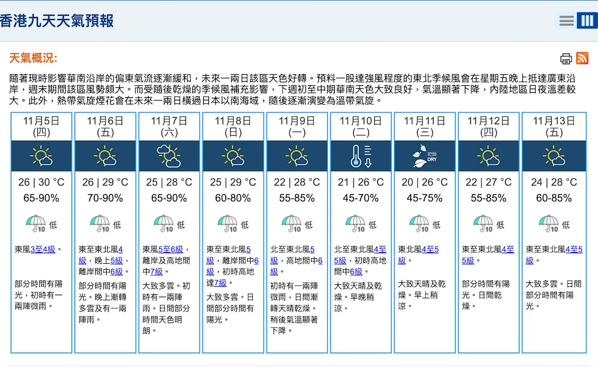
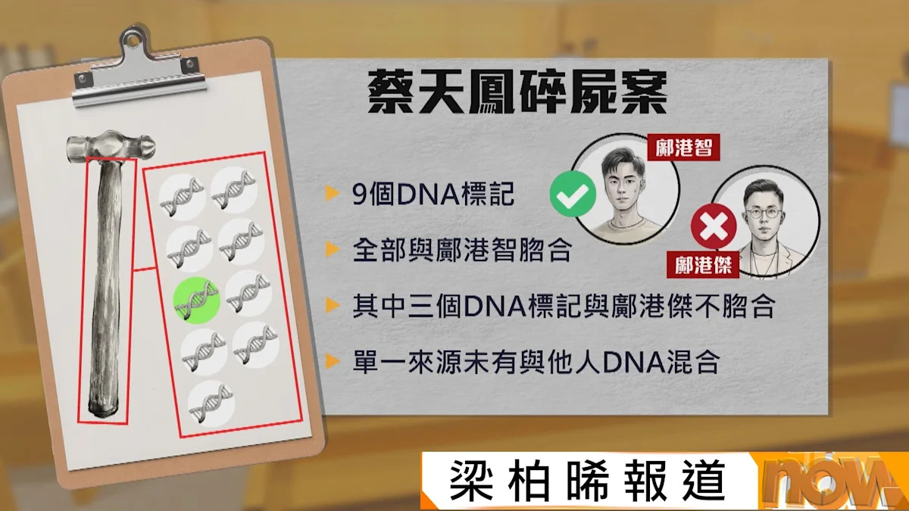
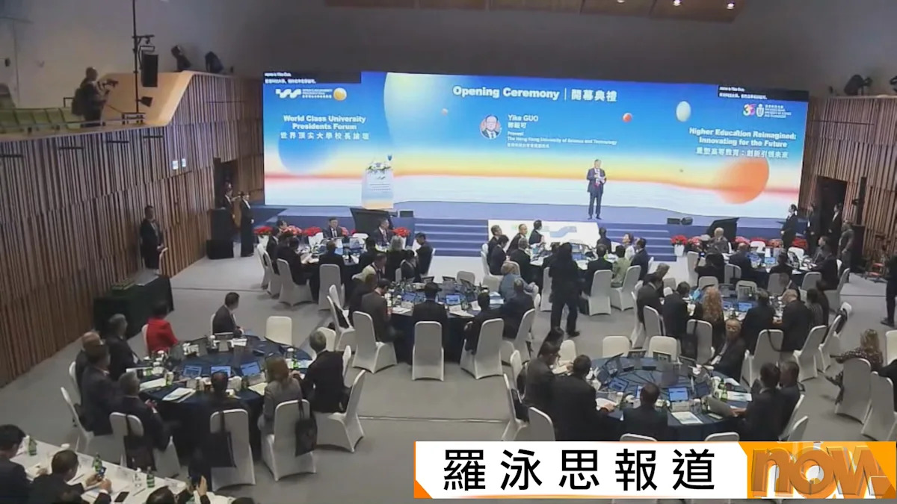
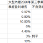
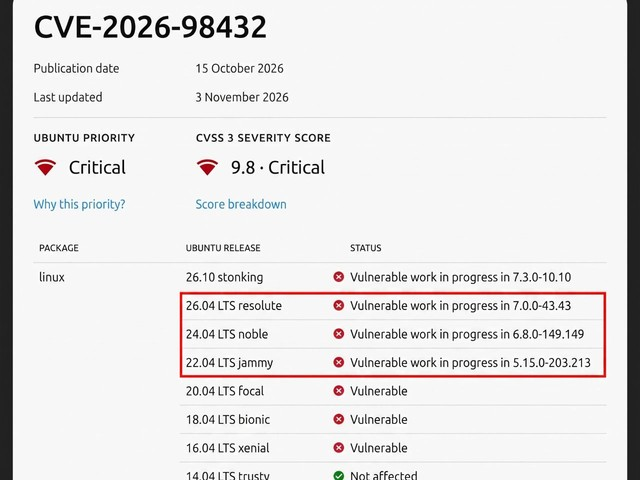
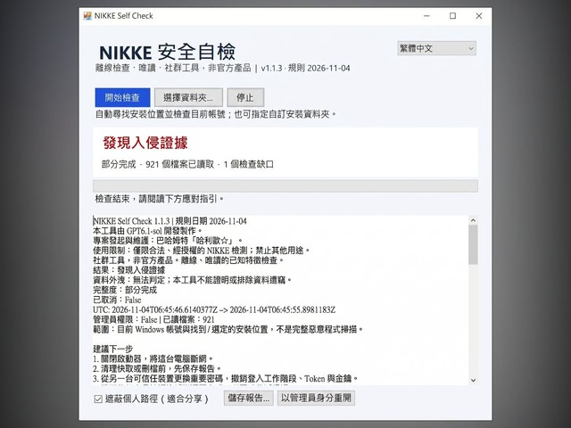
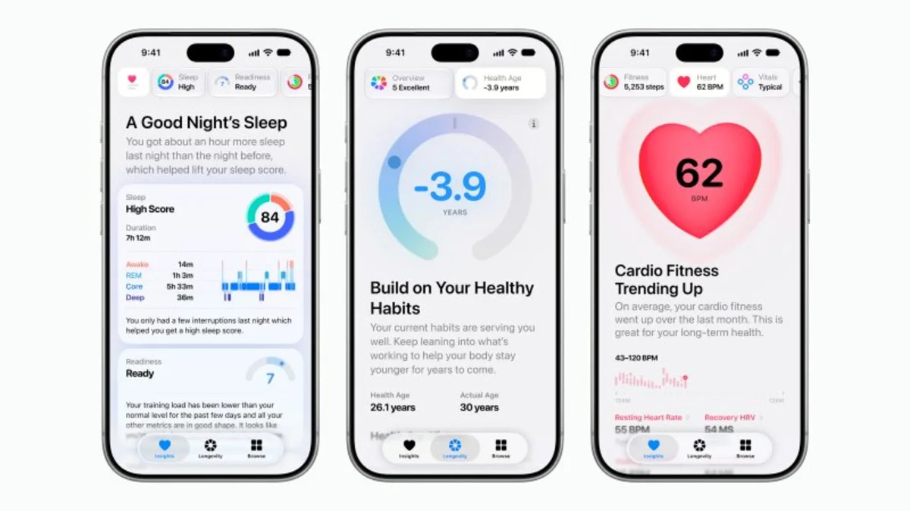
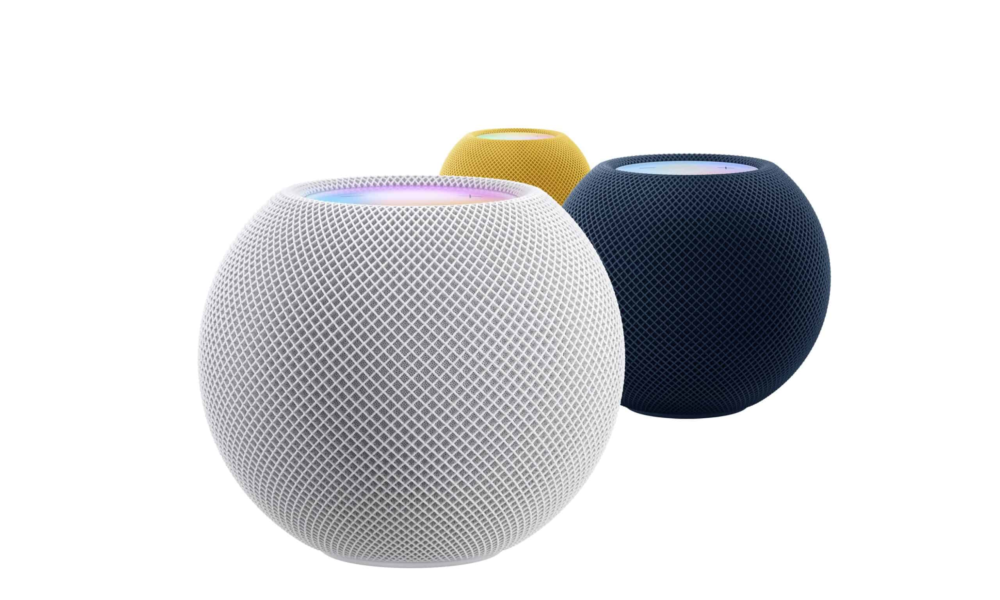
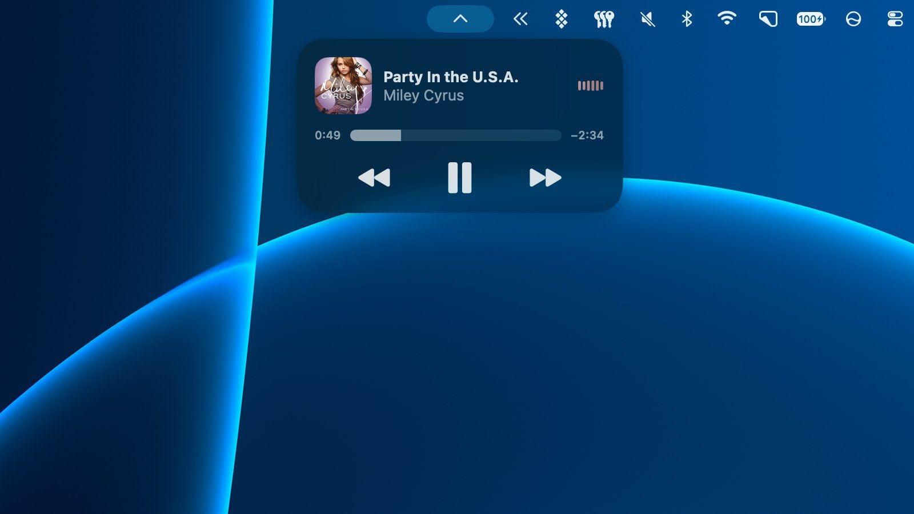

📰
娛樂 - Google 新聞
娛樂 - Google 新聞
香港第三季經濟預估增長 5.2%，勝市場預期
第三季本地生產總值按年預估增長 5.2%，私人消費放緩，但人工智能投資帶動出口升 30.4%，首三季合計增長 5.1%，是五年來最快。
美國中期選舉民主黨重奪國會控制權，美股大升、油價急挫；香港第三季經濟預估增長 5.2% 勝預期，恒指升至 23919 點。下周初強季候風抵港，氣溫將顯著下降。
第三季本地生產總值按年預估增長 5.2%，私人消費放緩，但人工智能投資帶動出口升 30.4%，首三季合計增長 5.1%，是五年來最快。
民主黨在中期選舉重奪國會控制權後，特朗普回應選舉結果，副總統萬斯則把落敗原因歸於伊朗戰事。
宏福苑有 13 戶不接受政府收購方案，政府稱擬明年立法收回業權。前運房局局長張炳良撰文指，《基本法》保障私人產權，特別立法強購易惹爭議並可能面對司法覆核，呼籲盡早公布驗樓報告。
律政司司長林定國預告，政府本周將提出條例修訂，以本地立法採納聯合國國際貿易法委員會電子可轉讓紀錄示範法原則，推動貿易文件電子化，為航運及貿易融資數碼化奠定基礎。
警方過去一星期打擊跨境白牌車行動中共拘捕七人，涉及非法載客取酬。

📰天文台預告一股強風程度的季候風將於星期五晚抵港，下周初至中期氣溫將顯著下降，今日日間氣溫仍重上 30 度，下周初可降至約 20 度。

📰案件續審，政府化驗師確認錘柄 DNA 與被告鄺港智脗合，非屬被告的機率極低；錘頭樣本量少，無法確認是否屬於蔡天鳳。
廉政公署起訴一名港交所前副總裁，涉嫌不誠實取用內部資訊系統，案件涉及內部資料的不當使用。
行政長官李家超結束北京訪問行程後抵達上海，期間曾與北京市委書記尹力會面，討論京港合作與金融開放。
發展局局長甯漢豪表示，已就瑪麗醫院升降機事故向行政長官提交調查報告。
立法會辯論打擊圍標的無約束力議員議案，有議員促請將圍標刑事化並設立黑名單，政府回應指預審名單已有相同效果。

📰世界頂尖大學校長論壇 2026 在科大開幕，匯聚全球約 50 所頂尖大學代表；復旦大學同時考察本港多間院校，考慮合作發展北部都會區大學城。
林志釉辭任醫務委員會委員，轉任周天瑜案死因研訊的代表律師。
歐聯賽事中，阿仙奴憑約基利斯一傳一射作客 2：1 擊敗布拉格斯巴達；曼城 3：2 挫萊比錫，皇馬亦 3：2 絕殺 AEK，利物浦則 2：3 敗走費倫巴治。
美國中期選舉民主黨重奪參眾兩院控制權後，美股齊升，道指收市飆 1569 點，標指及納指升逾 1%，國際油價則急挫逾 8%。
市場押注美伊戰爭可能快將結束，布蘭特期油盤中最多跌 10%，低見 93.22 美元，創兩個月新低，收報 94.62 美元，跌約 8.7%。
北水昨日淨流出 32.77 億元，資金買入中芯國際、沽出盈富基金。
新濠國際上市附屬新濠博亞公布第三季業績，應佔淨收入按年暴跌 99%。
聯邦制藥申報的司美格魯肽注射液體重管理適應症上市註冊申請，已獲內地藥監局受理。
市場傳出甲骨文取消與騰訊價值 70 億美元的晶片租賃交易，消息與美國中期選舉後的政策不確定性同日出現。
渣打指出，美國中期選舉結果引發政治不確定性，美元短期內可能進一步下跌。
人民銀行宣布明日開展 3000 億元買斷式逆回購，較上次縮量 2000 億元。
人民幣即期收市跌 5 點子，連跌兩日，報 6.6770，創兩周新低。
大家樂發盈喜，預期中期純利按年最多增長 1.25 倍，至逾 1 億元。
謝瑞麟發盈喜，預期中期由虧轉盈，盈利不少於 9000 萬元。
和美藥業宣布，鑑於現行市況，決定延遲全球發售及上市計劃。
中金公司中標第三批互換便利 163 億元，並已完成首批質押式回購交易，屬提振 A 股的措施之一。
今日市場焦點包括英倫銀行公布議息結果，以及華虹半導體及百濟神州公布業績。
 魔術師的伊謝爾倫日記
魔術師的伊謝爾倫日記
魔術師更新 2026 年 11 月的資產配置，交代最新持倉布局與調整方向。

💡阿 B 分析七大內銀股的股息保障，認為在現時息率與盈利基礎下，派息具備一定支撐。
阿 B 短文談及 SFISF 相關題材，內容較簡短，僅作市場筆記參考。
Debian 與 Ubuntu 的 APT 套件管理工具被發現嚴重漏洞，驗證機制可被繞過，攻擊者有機會取得 Root 最高權限，用戶應盡快更新。

📱Ubuntu 一個評分達 9.8 分的核心漏洞仍未修補，黑客已展開大規模掃描，估計約 210 萬台伺服器處於暴露狀態。

📱騰訊 CDN 傳出遭植入惡意木馬，再多 6 款遊戲被發現受影響，玩家應留意官方防範指引。
OpenAI 推出 GPT Images 2.6，圖像生成速度提升，ChatGPT 現已支援生成動態 GIF。

📱Apple 全新健康 App 加入繁體中文支援，並新增 Health Age 功能，可根據健康數據估算身體實質年齡，另可透過鏡頭測量體能。
Apple 發佈 Safari Technology Preview 256，修復多項問題並提升瀏覽效能。
Apple 推出訂閱挽留功能，開發者可在用戶取消訂閱時顯示自訂訊息，挽留訂戶。

📱HomePod mini 2 確認內置 2GB 記憶體，雖然 Apple 官方規格表並未列明。

📱macOS 27.3 為沒有動態島的 Mac 加入即時動態功能，可在選單列顯示 Apple Music 等資訊。
傳聞中的 MacBook Neo 2 預計 2027 年初推出，出貨量預計倍增至 1600 萬台。
OPPO Find X10 Pro Max 在香港開賣，主打三個 2 億像素鏡頭及哈蘇 LUMO 影像引擎，以拍攝為賣點。
HONOR Magic9 Pro Max 在香港首發，配備雙 2 億像素 ARRI 影像系統及 CIPA 8.0 防震，預購附送 G200 增距鏡。
 ePrice.HK 綜合新聞
ePrice.HK 綜合新聞
傳聞三星 Galaxy A38 電池將升級至歷代最大電量，售價亦可能再上調。
高通公布第四財季業績，營收 103 億美元，淨利按年增 140%，汽車業務增長 89%。
月之暗面推出的 Kimi K3.1 Pro 擁有 2.8 萬億參數並開放權重，在 Agent Arena 登上開源模型榜首。
OpenAI 推出圖像模型 Images 2.6，ChatGPT 現已支援生成動態 GIF，生成速度亦有所提升。
Alphabet 旗下 AI 製藥公司 Isomorphic Labs 據報正洽談約 50 億美元融資，估值可能達到 500 億美元。
Claude Code 調整了遊戲開發相關限制，提及現有遊戲將不再被拒絕回應。
微軟 AI 執行長蘇萊曼表示，若 AI 出現意識跡象，應立即暫停相關開發，以審慎處理安全問題。
AI 熱潮帶動算力需求，半導體大廠紛紛搶人才，招聘競爭白熱化。
美國一項研究發現，AI 使用者每天反而多工作約 90 分鐘，與「AI 節省時間」的預期形成反差。
Anthropic 研發 FlashProve 系統，期望可以查證 AI 回答究竟出自哪個模型，提升輸出可追溯性。
Google 允許中小學停用 AI 功能，但代價是連 Google 搜尋功能亦會受到限制，引起教育界討論。
中信建投指出，AI 算力鏈增長突出，估值消化後，市場焦點將轉向業績能否兌現。
QFII 第三季持倉市值按年增長近八成，偏好 AI 硬件等科創領域股份。
首程控股旗下基金投資簡智，布局物理 AI 數據基礎設施。
光學元件商 Coherent 第一財季業績超預期，盤後股價大漲 7.67%。
日本 iPS 細胞治療柏金遜症的療法在獲批後，已完成首例臨床應用，屬再生醫學的重要進展。